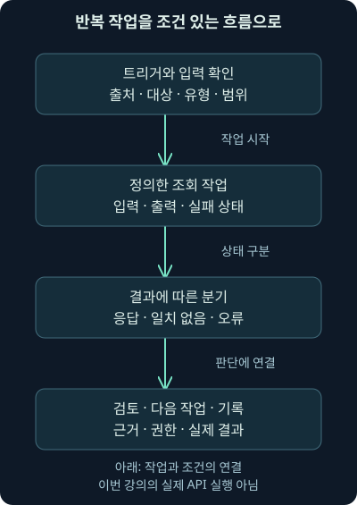
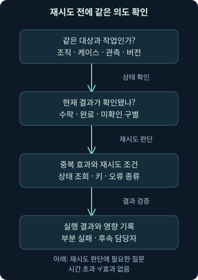
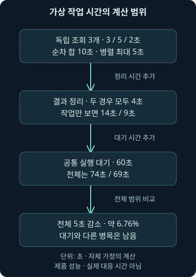

자동화의 역할과 사람의 판단
첫째 날17강. 작업 자동화와 오케스트레이션을 구분하고, 실패·재시도·권한·실제 조치의 확인을 포함한 운영 흐름을 상세히 배웁니다.
1. 같은 확인을 반복하다 중요한 질문을 놓친다면
가상 관제팀은 경보가 올 때마다 도메인을 복사하고, 관련 로그를 찾고, 자산 담당자를 확인하고, 조사 기록에 결과를 붙입니다. 이 작업을 하루에 여러 번 반복하면 정작 “무엇이 실제로 일어났는가?”를 생각할 시간이 줄어듭니다. 반복을 줄이되 잘못된 판단까지 빨라지지 않게 하려면 어떻게 해야 할까요?
16강에서는 사용 사례와 검색 조건을 검증했습니다. 이번17강은 작업 자동화·오케스트레이션, 실패와 재시도, 권한과 사람의 판단, 실제 조치 결과 확인을 다룹니다. 다음18강은 여러 SOC 도구 사이의 자료 연결과 조사 지식·코드의 재사용입니다. 설명을 충분히 담기 위해 공격자 모듈은19강부터 이어갑니다.
조직·주소·시간·계산은 자체 가상 사례입니다. 본문의 시간 계산은 직접 실행했지만 실제 보안 제품·계정·단말·방화벽·외부 조회·차단을 실행한 결과는 아닙니다. 자동화의 원리를 배우는 것과 운영 환경에서 권한을 행사하는 것은 구별합니다.
2. 자동화와 오케스트레이션을 구분해 봅시다
자동화, automation는 정해진 작업을 프로그램이 수행하게 하는 것입니다. 예를 들어 경보에서 도메인을 추출해 관련 기록을 찾는 작업이 있습니다. 입력이 무엇이고 어떤 결과를 돌려주는지, 실패를 어떻게 알릴지가 정의되어야 합니다.
오케스트레이션, orchestration은 여러 작업을 조건과 순서에 맞춰 연결하는 일입니다. 조회가 성공하면 결과를 정리하고, 시간 초과면 대기·재시도하거나 담당자에게 넘기는 흐름이 여기에 해당합니다. 한 작업을 자동화했다고 전체 조사 과정이 완성되는 것은 아닙니다.
식당의 조리기구가 정해진 일을 하는 것이 자동화라면, 주문에 맞춰 준비·조리·검수·전달을 연결하는 운영은 오케스트레이션에 가깝습니다. 다만 보안에서는 입력 자체가 틀리거나 악의적일 수도 있습니다. 기계가 정해진 순서를 잘 실행한 것과 그 판단이 옳은 것은 다릅니다.
3. 플레이북을 실행 흐름으로 바꾸기
플레이북, playbook은 어떤 상황에서 어떤 자료를 확인하고 판단·조치할지 적은 절차입니다. 워크플로, workflow는 그 절차의 일부를 실행 가능한 작업·조건·분기로 연결한 흐름입니다. 사람이 검토할 단계도 워크플로에 포함할 수 있습니다.
“관련 자료를 충분히 확인한다”는 문장은 자동 실행 조건으로는 모호합니다. 어떤 출처를 어느 기간으로 조회하고, 필요한 값이 없거나 결과가 너무 많으면 어떻게 할지 구체화해야 합니다. 입력·출력·허용 범위가 분명할수록 새 담당자도 같은 기준으로 작업을 이어갈 수 있습니다.

그림에서는 조회 결과를 받은 다음에도 해석·검토 단계가 남습니다. 경보 문자열 하나를 곧바로 차단 명령으로 바꾸는 것이 목표가 아닙니다. 반복 수집은 프로그램에 맡기고 판단에 필요한 맥락을 사람에게 빠짐없이 전달하는 흐름부터 생각해 보세요.
4. 무엇이 흐름을 시작하는지도 조건입니다
트리거, trigger는 실행을 시작하는 사건이나 요청입니다. 새 경보·특정 상태 변경·정해진 시각·분석가의 수동 실행 등이 될 수 있습니다. 같은 워크플로라도 어떤 범위의 자료에서 몇 번 시작되는지에 따라 결과와 부담이 달라집니다.
경보가 수정될 때마다 새 흐름이 시작되면 같은 조회·알림이 반복될 수 있습니다. 워크플로가 남긴 상태 변경이 다시 자신의 트리거가 되는 순환도 확인해야 합니다. 실행 원인·입력 식별자·워크플로 버전·실행 번호를 남기면 반복의 이유를 좁힐 수 있습니다.
수동 버튼도 운영 권한을 행사하는 통로입니다. 버튼을 누를 수 있는 사람과 실제 외부 시스템에서 수행되는 권한이 같은지 확인하세요. 실행하는 서비스 계정의 넓은 권한이 버튼 뒤에 숨는 구조를 무심코 만들면 안 됩니다.
5. 작은 작업도 입력과 출력의 약속이 필요합니다
도메인 조회 작업의 입력은 문자열 하나만이 아닐 수 있습니다. 값의 유형·출처·관련 시각·대상 조직·공유 조건도 필요합니다. 참고 보고서 URL과 실제 통신 대상 URL을 구별하지 않으면 조회·후속 작업의 의미가 달라집니다.
출력도 성공/실패 두 가지로만 나누기 어렵습니다. 정상 응답이지만 일치 자료가 없을 수 있고, 권한 부족·시간 초과·부분 결과·분석 중 상태일 수 있습니다. 시간 초과, timeout는 정한 시간 안에 결과를 확인하지 못했다는 뜻입니다. 그 값이 정상이라는 뜻이 아닙니다.
API, 프로그램끼리 요청·응답을 주고받는 인터페이스에서 요청을 받았다는 응답과 실제 작업 완료도 구별합니다. 작업 번호가 돌아왔다면 완료 상태와 결과를 이어서 확인해야 할 수 있습니다. 요청 성공·조회 주장·내부 관측·보안 판단을 한 상태로 합치지 마세요.
6. 초기 조사에서 줄일 수 있는 반복을 찾습니다
가상 스팸 경보라면 관련 기간의 메일 기록을 찾아 같은 메시지가 얼마나 퍼졌는지 정리할 수 있습니다. 이때 보낸 사람 문자열만 같다는 이유로 모두 같은 메일로 합치지 않고, 메시지 식별자·수신자·시간·제목과 실제 전달 결과를 검토합니다. 찾은 건수와 사용자 열람·실행 여부도 다릅니다.
통신 도메인의 과거 관측·자산 정보·등록 정보·위치 추정 등을 모으는 보강도 반복을 줄일 수 있습니다. 패시브 DNS, passive DNS는 관측·수집된 이름 해석 자료를 활용하는 방식입니다. 여기서 passive는 분석가가 수작업한다는 뜻이 아닙니다. Whois는 등록 관련 정보를 조회하는 서비스·자료 체계이고, GeoIP는 주소의 위치 관련 추정 정보입니다. 어느 것도 현재 사용자·실제 행위자·악성 여부를 단독으로 증명하지 않습니다. CIRCL 패시브 DNS 안내와 MaxMind 정확도 안내, 확인일2026-11-05를 참고했습니다.
오래된 Whois 조회 예제를 그대로 고정하면 현재 연결을 놓칠 수 있습니다. RDAP, Registration Data Access Protocol은 등록 정보를 조회하는 프로토콜입니다. ICANN은2025-01-28부터 일반 최상위 도메인인 gTLD의 등록 정보 제공 기준을 RDAP로 전환했다고 설명합니다. 모든 종류의 등록·주소 조회에서 Whois가 완전히 사라졌다는 뜻은 아니므로 대상 서비스·지원·접근 범위를 확인하세요. ICANN 공식 전환 안내, 확인일2026-11-05를 대조했습니다.
외부 위협 정보 서비스 조회는 어떤 값이 어디로 전달되는지 확인해야 합니다. 보고서나 파일 전체 제출과 해시 값 조회는 범위가 다릅니다. 이번 강의에서는 이런 서비스를 호출하지 않았고, 뒤의 자체 실습에서도 미리 작성한 가상 결과만 사용합니다.
7. 조사를 돕는 작업과 상태를 바꾸는 작업
도메인 차단·단말의 네트워크 격리·비밀번호 만료 강제·복구 요청 발송도 자동화할 수 있는 작업의 유형입니다. 그러나 각각 다른 영향과 확인 절차가 필요합니다. 의심스러운 웹 접근 한 건을 모든 도메인의 차단으로 확대하거나, 정상 서비스 계정의 인증을 끊으면 업무가 중단될 수 있습니다.
가상 악성 코드 경보에서 격리를 검토한다면 실제 대상 단말 식별자·현재 연결 상태·대체 관리 경로·업무 영향·수행 권한을 확인합니다. 피싱 경보에서 계정 조치를 검토한다면 URL 방문과 자격 증명 제출·세션 오용을 구별해야 합니다. 주소나 문자열 하나가 조치의 전체 근거가 될 수는 없습니다.
헬프데스크에 재구축 요청을 보내는 것도 메시지 전달·작업 요청이라는 실제 효과를 만듭니다. “알림만 보내는 것”이라고 간단히 보지 말고 수신자·내용·중복·담당자의 후속 절차를 확인합니다. 이번에는 외부 메시지·계정 변경·격리·차단·복구 요청을 수행하지 않았습니다.
8. 실패를 별도의 결과로 남깁니다
조회가 실패했을 때 결과 칸을 빈 목록으로 채우면 “찾아봤지만 없음”과 구별하기 어렵습니다. 실제로는 아직 확인하지 못한 자료가 있다는 의미입니다. 담당자가 실패를 보고 재조회·다른 출처 확인·수동 조사 중 무엇을 할지 선택할 수 있어야 합니다.
| 작업 결과 | 의미 | 다음에 검토할 것 |
|---|---|---|
| 정상 응답·일치 없음 | 그 요청 범위에서 일치 결과가 없음 | 기간·출처·자료 범위·갱신 |
| 시간 초과 | 정한 시간 안에 결과를 확인 못함 | 상태 조회·안전한 재시도 여부 |
| 권한 부족 | 요청한 작업의 권한 조건을 충족 못함 | 대상·계정·권한 설정 |
| 부분 결과 | 일부 범위만 처리됐을 수 있음 | 누락·페이지·제한·후속 처리 |
표에서 “일치 없음”도 정상 확정은 아닙니다. 특히 조회한 출처가 제한적이거나 오래되었을 수 있습니다. 실패·미확인·일치 없음·분석 결과를 구별해 보존하면 자동화가 불확실성을 숨기지 않습니다.
9. 재시도 전에 부작용을 확인합니다
일시적인 통신 오류는 재시도, 같은 의도에 따라 다시 요청하는 방법으로 해결할 수 있습니다. 그러나 시간 초과가 “상대가 아무 작업도 하지 않았다”는 뜻은 아닙니다. 상대는 조치를 완료했지만 응답만 전달되지 않았을 수 있습니다.
조회는 같은 값을 다시 물어볼 수 있어도, 티켓 생성·메시지 발송·권한 변경은 다시 실행하면 효과가 늘거나 달라질 수 있습니다. 작업 상태를 먼저 확인하고, 재시도 가능한 오류와 권한·입력 오류를 나누세요. 횟수·전체 대기 시간·요청 속도의 상한도 정해야 합니다.
많은 요청이 동시에 재시도하면 장애가 더 심해질 수 있습니다. 실패가 계속될 때는 자동 재시도를 멈추고 담당자에게 넘기는 흐름도 필요합니다. 단순히 모든 예외를 잡아 처음부터 다시 실행하는 방식은 안정적인 운영 절차가 아닙니다.
10. 멱등성은 같은 의도의 중복 효과를 다루는 성질입니다
멱등성, idempotency는 같은 요청을 반복해도 의도한 상태 변화가 불필요하게 반복되지 않도록 다루는 성질입니다. 조회 결과를 다시 읽는 것과 같은 티켓을 또 만드는 것은 다릅니다. “한 번 실행했다”는 메모만으로 여러 시스템의 중복 효과가 저절로 막히지는 않습니다.
멱등성을 설계할 때는 같은 의도를 나타내는 키, 식별 값의 범위를 정합니다. 조직·케이스·원관측·작업 종류·버전 등을 고려할 수 있습니다. 같은 도메인이라는 이유만으로 서로 다른 케이스의 작업을 하나로 합치면 필요한 기록이 빠집니다.

그림에서 확인되지 않은 상태를 “완료”로 채우지 않는 것이 중요합니다. 여러 실행이 동시에 들어올 때의 잠금·원자적 기록, 상태의 영속 보존·만료, 외부 시스템의 지원도 검토해야 합니다. 다음18강의 자체 실습은 한 실행 안의 로컬 계획만 중복 제거하며 실제 분산 시스템의 한 번만 실행 보장은 아닙니다.
11. 사람의 검토도 구체적인 입력을 받아야 합니다
검토 단계에는 대상·원관측·분석 근거·대안 설명·공유 조건·예상 영향·실패 시 복구·실행 범위가 보여야 합니다. “진행하시겠습니까?”라는 버튼만 있으면 무엇을 판단해야 하는지 알기 어렵습니다. 한 대상의 검토를 다른 조직·단말·기간까지 확대하지 않습니다.
자동화가 준비한 권고와 조직이 허용한 조치는 별개입니다. 누가 어떤 범위를 승인했고 실제 실행된 내용과 같은지 남겨야 합니다. 판단 시점과 실행 시점 사이에 대상 상태·자산 소유·서비스 중요도가 바뀌었는지도 확인합니다.
모든 작업을 사람이 매번 눌러야 한다는 뜻은 아닙니다. 조직이 반복적으로 허용한 저영향 작업은 명확한 조건과 권한 아래 자동 수행할 수 있습니다. 영향이 큰 상태 변경에는 그에 맞는 통제·검증·업무 연계가 필요합니다. 여기서는 실제 운영 정책을 대신 결정하지 않습니다.
12. 순차 실행과 병렬 실행의 시간을 계산해 봅시다
독립 조회 세 개의 가상 시간이3초·5초·2초이고 결과 정리에4초가 걸린다고 합시다. 순서대로 조회하면 합계10초 뒤 정리를 시작하므로14초입니다. 서로 의존하지 않고 동시에 수행할 수 있다면 가장 늦은5초 조회 뒤 정리하므로9초입니다.

그림에서는 조회 구간이 줄어도 공통 대기 시간이 남는지 봐주세요. 다음 코드는 실행 대기가60초라는 조건을 더한 자체 계산입니다. 작성 시 Python3.12.14로 직접 실행했습니다.
lookups = [3, 5, 2]
compose = 4
queue_wait = 60
serial = sum(lookups) + compose
parallel = max(lookups) + compose
print(serial, parallel)
print(queue_wait + serial, queue_wait + parallel)
print(round((serial - parallel) / (queue_wait + serial) * 100, 2))sum은 조회 시간의 합, max는 동시에 시작한 독립 조회 중 가장 긴 시간입니다. 결과는14·9초, 대기를 포함하면74·69초입니다. 마지막 값6.76은 대기 포함 전체 시간에서 줄어든 비율을 퍼센트로 계산한 것입니다. 작업 구간의5초 단축을 전체 처리 시간의 큰 개선으로 과장하지 않으려는 계산입니다.
실제로는 동시 요청 제한·의존 관계·네트워크 지연·재시도·수집 지연·사람의 검토 시간이 있습니다. 독립이 아닌 작업을 병렬로 돌리면 앞 결과가 필요한 뒤 작업이 틀릴 수 있습니다. 이 숫자는 제품 성능이나 실제 대응 시간의 보장이 아닙니다.
13. 요청 완료와 조치 효과 확인을 나눕니다
격리 요청이 성공했다고 가정해도 해당 단말이 실제로 격리 상태가 되었는지 확인해야 합니다. 명령 수락·작업 완료·실제 효과는 서로 다른 관측입니다. 반대로 응답이 늦다고 여러 번 같은 조치를 보내면 중복이나 상태 충돌을 만들 수 있습니다.
여러 시스템의 일부 작업만 성공하는 경우도 있습니다. 케이스 기록은 남았는데 외부 티켓은 생성되지 않았거나, 차단은 적용됐지만 후속 기록이 실패할 수 있습니다. 성공한 단계·실패한 단계·현재 영향·다음 담당자를 따로 남겨야 합니다.
되돌리는 조치도 원래 효과를 완전히 취소하지는 않을 수 있습니다. 차단 해제는 차단된 동안 놓친 통신을 되살리지 않고, 보낸 메시지는 수신자의 기억과 후속 행동까지 지우지 못합니다. 보상·복구 절차와 필요한 증거 보존을 설계하되 이를 모든 단계가 한꺼번에 취소되는 거래처럼 가정하지 않습니다.
14. 시험 모드의 이름보다 실제 동작 범위를 봅니다
드라이런, dry-run은 실제 효과를 내기 전에 수행 내용을 시험·표시하는 방식을 가리키지만 제품마다 의미가 다를 수 있습니다. 코드가 실행되는지, 외부 호출이 가능한지, 어떤 쓰기만 막는지 확인해야 합니다. 이름 하나로 모든 부작용이 없다고 단정하지 마세요.
2026-11-05 확인한 TheHive Functions 안내는 함수의 Enabled·Disabled·Dry-run 모드와 Dry-run에서 TheHive 엔터티 생성·변경을 하지 않는 동작을 설명합니다. 이 범위를 모든 외부 연결의 무해성이나 다른 제품의 동일 동작으로 확대하지 않습니다.
이 강의의 실제 실행은 위 시간 계산뿐입니다. 다음18강의 프로그램은 애초에 외부 API 호출 코드 없이 미리 적힌 가상 결과를 읽습니다. 이를 실제 제품의 시험 모드나 실제 요청·응답 시험이라고 부르지 않습니다.
15. 혜택을 측정할 때 누락과 실패도 셉니다
반복 조회가 표준화되면 새 담당자의 적응을 돕고 복사·누락 작업을 줄일 수 있습니다. 하지만 잘못된 입력을 빠르게 대량 처리하면 분석가에게 더 많은 정리 일을 만들 수도 있습니다. 자동화의 가치는 실행 횟수나 버튼 클릭 수만으로 평가하기 어렵습니다.
처리 대기·단계별 시간·실패·재시도·부분 결과·중복·수동 재작업·잘못된 조치·누락을 함께 봅니다. 평균 시간이 줄어도 일부 중요한 케이스가 계속 멈추면 운영상 문제가 남습니다. 자동화가 중단된 상황에서 수동으로 이어갈 수 있는 자료와 책임자도 필요합니다.
기록에 남지 않은 작업은 원인을 찾기 어렵습니다. 다만 실행 로그에 API 키·인증 정보·민감한 원문 전체를 무조건 남기는 것도 피해야 합니다. 작업 식별과 원인 분석에 필요한 기록을 보존하면서 접근·마스킹·보존 범위를 정합니다.
16. 보안 전용 도구와 범용 흐름 도구
SOAR, Security Orchestration, Automation and Response는 보안 작업의 연결·자동화·대응을 돕는 플랫폼 범주입니다. 전용 도구는 보안 제품 연결·사건 처리 같은 기능을 제공할 수 있고, 범용 워크플로 도구는 여러 업무의 흐름을 구성하는 데 쓰입니다. 범용 도구를 설치했다고 보안용 의미·권한·검토 절차가 자동으로 갖춰지는 것은 아닙니다.
과거 자료의 상품명을 현행 소유·판매·무료 기능 목록으로 반복하지 않습니다. 연결할 시스템·실패 처리·인증·감사·버전·지원·운영 비용을 기준으로 실제 시험해야 합니다. 도구를 먼저 고르고 절차를 억지로 끼워 맞추면 중요한 빈칸이 남을 수 있습니다.
예를 들어 Node-RED는 IBM에서 시작했고 현재 OpenJS Foundation에 속한 흐름 기반 도구로, 공식 라이선스는 Apache2.0입니다. n8n은 확인한 공식 안내에서 Community 자체 호스팅의 Sustainable Use License와 별도 Enterprise 조건을 구분합니다. “자체 호스팅 가능·무상”과 “모든 목적에 제한 없는 동일 라이선스”는 다릅니다. 2026-11-05의 Node-RED 소개·라이선스와 n8n 공식 안내·저장소 라이선스를 대조했습니다. 구매·설치·개별 사용의 허용 여부 심사는 하지 않았습니다.
17. TheHive·Cortex를 현재 문서와 연결합니다
앞서 살펴본 TheHive는 사건 관리에, Cortex의 분석기·응답 작업은 보강과 수행에 연결할 수 있습니다. 분석기, analyzer는 관측값을 분석·보강하는 작업이고, 응답 작업, responder는 정의된 동작을 수행하는 기능입니다. 이름이 분석기여도 어떤 자료가 외부로 전송되는지는 실제 설정을 확인해야 합니다.
공식 현재 문서는 TheHive6 문서이며 Flow 소개에6.0·One 표시가 있습니다. 흐름 도구가 단일 함수·알림·Cortex 연결 등과 어떤 역할을 나누는지 확인해야 합니다. 오래된 “Cortex가 무료 내장 자동화라서 누르면 모든 연결이 된다”는 식으로 읽지 마세요. 설치·연결·에디션·라이선스·역할·지원 버전이 실제 동작을 결정합니다.
이 설명은 2026-11-05 확인한 TheHive Flow 소개와 Responder 실행·결과 안내를 기준으로 합니다.6은 대조한 문서 계열이며 영구적인 최신 버전이라는 뜻이 아닙니다. 실제 제품 실행·버튼·연동·라이선스 활성화를 수행하지 않았습니다.
18. 자동화가 먼저가 아닌 이유
자료가 제대로 들어오고 분석 조건이 검증되어야 자동화할 다음 행동도 설명할 수 있습니다. 2025년 발행된 ASD ACSC 등의 SIEM·SOAR 실무 지침, 확인일2026-11-05는 적절한 구현·유지관리와 숙련 인력이 필요하며, 안정적인 SIEM·로그 분석의 기반을 우선 갖추는 중요성을 설명합니다.
이는 모든 팀에 같은 제품이나 구성 순서를 강제한다는 뜻이 아닙니다. 가상 팀에서도 먼저 명확한 저영향 조회를 작게 시험하고, 실패·중복·권한과 실제 결과를 검증하며 범위를 넓힐 수 있습니다. 문제가 생겼을 때 새 실행을 멈추는 방법과 진행 중 작업을 인수하는 방법도 마련합니다.
자동화 중지는 이미 실행된 효과를 되돌리는 기능과 다릅니다. 어떤 단계까지 수행되었는지 남겨야 수동 조사와 복구가 이어집니다. 다음18강에서는 이 흐름을 여러 도구의 자료 구조·책임·지식 저장과 연결하겠습니다.
19. 복습 질문과 바로 읽는 해설
질문 1. 도메인 조회 스크립트 하나면 조사 전체가 자동화된 것인가요?
해설: 한 작업의 자동화입니다. 입력·오류·다음 단계·판단·권한·기록을 조건과 순서로 연결하는 오케스트레이션은 별도 설계가 필요합니다.
질문 2. 조회 시간 초과를 일치 없음으로 저장하면 왜 문제인가요?
해설: 확인하지 못한 상태를 확인했지만 결과가 없는 상태로 바꾸게 됩니다. 재조회·수동 대조가 필요한 불확실성이 사라져 잘못된 정상 판단을 만들 수 있습니다.
질문 3. 조치 요청이 시간 초과면 다시 보내도 괜찮나요?
해설: 상대가 이미 실행하고 응답만 잃었을 수 있습니다. 상태 확인·재시도 안전성·중복 효과·식별 키와 수행 기록을 확인해야 합니다.
질문 4. 같은 도메인의 작업은 전부 하나로 중복 제거할까요?
해설: 다른 조직·케이스·관측·작업 의도일 수 있습니다. 값 하나가 아니라 동일 의도를 나타내는 범위를 정하고 실제 출처와 지원 동작을 검증해야 합니다.
질문 5. 조회는 읽기 작업이니 외부 전달이 없나요?
해설: 외부 서비스에 도메인·해시·자료를 보내는 조회일 수 있습니다. 요청 자체의 전달 범위와 수신자를 확인해야 하며 읽기와 자료 비전송은 같은 뜻이 아닙니다.
질문 6. 분석가가 승인한 대상과 실행 시점의 대상이 다르면 어떻게 하나요?
해설: 식별·범위·시간·버전과 현재 상태를 다시 확인해야 합니다. 한 대상에 대한 판단을 다른 자산이나 조직으로 자동 확대하지 않습니다.
질문 7. 독립 조회3·5·2초와 정리4초를 병렬화하면 왜9초인가요?
해설: 동시에 시작한 조회 중 가장 긴5초를 기다린 뒤4초 정리하기 때문입니다. 실제로 독립이며 동시 수행이 가능하다는 가정이 필요합니다.
질문 8. 처리14초가9초로 줄면 전체 대응도 같은 비율로 줄어드나요?
해설: 별도 대기60초를 포함하면74초에서69초로 줄어 약6.76%입니다. 입력 지연·검토·다른 병목을 포함한 전체 범위를 구분해야 합니다.
질문 9. 케이스 기록은 실패했지만 차단은 성공했다면 전체 실패로 끝내도 되나요?
해설: 실제 차단 효과가 남아 있습니다. 성공·실패 단계·현재 영향·확인된 근거·후속 담당자를 따로 기록해야 안전하게 이어갈 수 있습니다.
질문 10. Dry-run이라는 이름만으로 외부 효과가 없다고 확정할까요?
해설: 제품·버전·어떤 작업을 막는지에 따라 다릅니다. 코드 실행·외부 호출·생성/수정 범위를 확인해야 하며 일부 엔터티 쓰기 제한을 전체 무해성으로 확대하지 않습니다.
질문 11. 모든 워크플로가 성공 상태면 탐지·대응도 정확한가요?
해설: 실행 조건을 처리했다는 것과 원자료·분석·대상·권한이 올바른 것은 다릅니다. 성공률뿐 아니라 누락·재작업·잘못된 판단과 실제 효과를 함께 확인합니다.
질문 12. 새 실행을 멈추면 이미 보낸 메시지·차단도 취소되나요?
해설: 자동화 중지와 효과 복구는 별개입니다. 이미 수행된 범위를 확인하고 필요한 보상·복구를 따로 진행해야 합니다. 외부 효과를 모두 되돌릴 수 있다고 가정하지 않습니다.